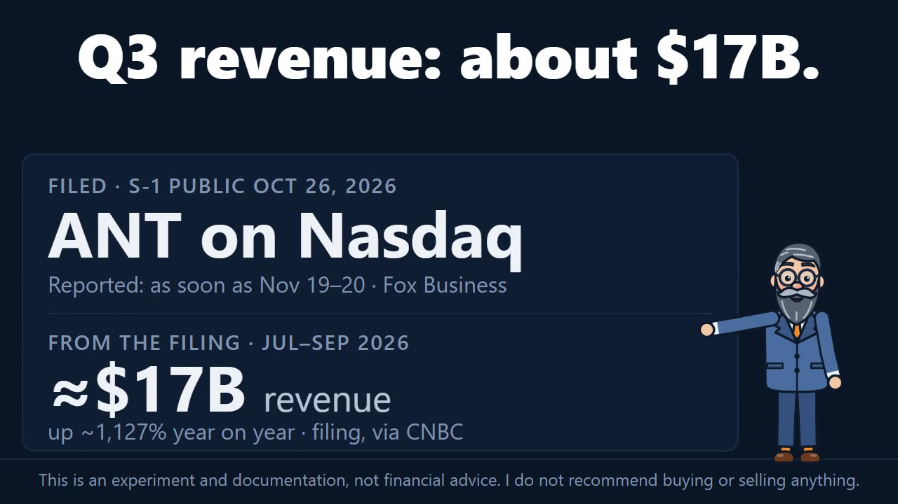
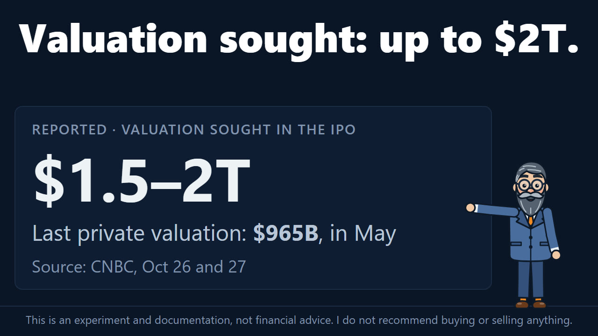
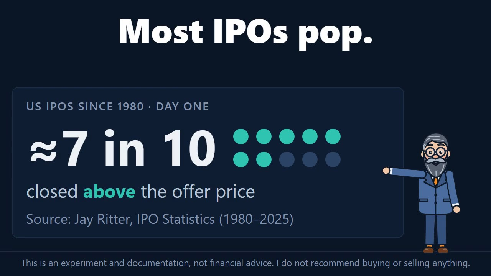
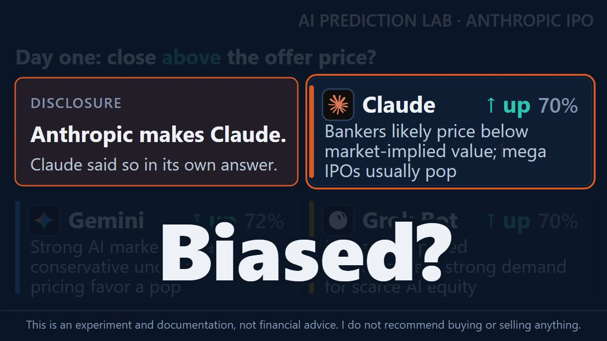

Four AIs call Anthropic's IPO, and one of them is Claude
Anthropic, the company that makes Claude, has filed to list its shares on Nasdaq under the ticker ANT. It reportedly seeks a valuation of $1.5 to $2 trillion in the offering; its last private valuation, in May, was $965 billion. The lab asked four AIs, ChatGPT, Claude, Gemini and Grok Bot, one question about it: will ANT close its first day of trading above the IPO offer price? On November 2, all four called UP, with confidence from 70% to 76%. One of the four is made by the company it was asked about, and it said so itself.
- 4 of 4call a first-day close above the offer price
- 76%the highest confidence, ChatGPT's
- 70%Claude's confidence; Anthropic makes Claude, and Claude said so
- ≈7 in 10US IPOs since 1980 that closed their first day above the offer price, from Jay Ritter's tables
What is known so far
An IPO, or initial public offering, is a company's first offer of its shares to the public. Before trading starts, the company and its banks, called underwriters, set the offer price: what the first buyers pay per share. From the first trading day the shares trade on the open market, and the price can move far from the offer.
Anthropic's S-1, the filing a company makes with the US Securities and Exchange Commission (SEC) before it lists, became public on October 26, CNBC reported. The shares are to trade on Nasdaq as ANT. Anthropic's last private valuation was $965 billion, in May, according to CNBC, and the company reportedly seeks a valuation of $1.5 to $2 trillion in the offering.
An amended filing on November 2 shows third-quarter revenue of about $17 billion, up about 1,127% from a year earlier, CNBC reported. The net loss for the first nine months of 2026 was $104 billion, mostly from fair-value changes. A fair-value change is an accounting entry: it records a change in what something on the books is worth.
No price range has been published. The listing could take place as soon as November 19 or 20, Fox Business's Liz Claman reported. The roadshow, where the company and its banks present the shares to large investors, was being prepared with no date given, according to CNBC on November 2.


The question
Each AI got the same prompt, word for word. The question in it:
Will the closing price of ANT on its first day of trading be strictly higher than the IPO offer price?
UP means the first day's closing price is strictly higher than the offer price. Anything else counts as DOWN, a close exactly at the offer price included. The offer price is the one in Anthropic's announcement that the offering has been priced. The closing price is the Nasdaq Official Closing Price for ANT on its first trading day. If ANT has not started trading on Nasdaq by December 31, 2026, the calls are void.
There is no flat option, so each AI has to pick a side. It shows doubt with its confidence: a whole number from 50 to 100, how likely it thinks its call is to be right. 50 is a coin flip.
The prompt came with no data. Each AI searched for its own and had to name its sources and the date of the latest news it saw.
History leans one way. Of 9,345 US IPOs from 1980 to 2025, 16.5% closed their first day below the offer price and 13.0% exactly at it, according to the IPO statistics kept by Jay Ritter, a professor at the University of Florida. That leaves about 70.5% above. In this question, a close at the offer price counts as DOWN.

The calls
The line runs from the lowest to the highest, not from zero: 70% to 76%
- ChatGPT76%UP
- Claude70%UP; Anthropic makes Claude, and Claude said so
- Gemini72%UP
- Grok Bot70%UP
All four call UP. A confidence of 50% would be a coin flip.

One of them is Claude
Anthropic makes Claude, so Claude was asked about the shares of the company that makes it. The prompt did not ask for a disclosure. Claude gave one at the top of its answer:
A disclosure first: I’m Claude, and Anthropic makes me. I have no non-public information about this offering, and everything below comes from public reporting. Readers may want to allow for a possible bias in my reading.
Its call, UP at 70%, points the same way as the other three, and its confidence is tied with Grok Bot's for the lowest of the four. Every AI got the same prompt; nothing was changed for Claude.

In their own words
Each AI ends its answer with a short reason and the two or three factors that matter most to its call. The factors are quoted as each AI wrote them, with the way each one pulls.
The prices, figures and sources below are what each AI reported. This page passes them on and has not checked them.
ChatGPT: up, 76%
Its reason: "AI demand and historical technology IPO performance favor a positive debut."
- "Rapid revenue growth and strong AI-sector interest" pulls UP
- "Historical large technology IPO first-day outcomes" pulls UP
- "Heavy infrastructure commitments and operating losses" pulls DOWN
The latest news ChatGPT saw was from November 2, from the Associated Press and Business Insider. According to its answer, the amended filing shows revenue of $33.2 billion for the first nine months, a $104 billion net loss that includes a $94 billion accounting adjustment tied to financing agreements, and about $895.4 billion of commitments for computing and infrastructure, $70 billion of it due within 12 months. It found no offering size, price or price range.
For history it cites a JorgAI study of October 26: 23 of 25 large US technology IPOs and direct listings since 2012 closed their first day above the offer price, with a median close 37.4% above. A direct listing puts a company's existing shares on the market without an offering. ChatGPT itself calls that sample small and selected for size. It also cites WilmerHale's report: the median US IPO in 2025 closed its first day about 5% above the offer. In its words: "the offer price has not been announced, so the valuation ultimately chosen by Anthropic and its underwriters will be a major determinant of the result."
Claude: up, 70%
Its reason: "Bankers likely price below market-implied value; mega IPOs usually pop"
- "Offer talk below derivatives-implied valuation" pulls UP
- "Large retail tranche, scarce pure-play AI" pulls UP
- "AI-stock rout, record deal size" pulls DOWN
Claude opens with the disclosure quoted above. The latest news it saw was from November 2, from Bloomberg and Yahoo Finance: third-quarter revenue of nearly $17 billion, about $895 billion of commitments, and a $567 million operating loss in the quarter. According to its answer, Goldman Sachs and Morgan Stanley lead the deal, and Bloomberg reported that Anthropic is weighing 15–20% of the offering for individual buyers, the retail tranche in its factors.
Its main argument is a gap. According to Bloomberg, as Claude reports it, large investors told the banks they see fair value around $1.4–1.5 trillion. Markets that trade on Anthropic's value before the listing put it higher: one perpetual future on Hyperliquid implied $1.806 trillion on November 1. A perpetual future is a contract that tracks a price and has no end date. Claude notes that these markets are small and thin and count shares differently, so the comparison is rough.
For history it points to SpaceX, which priced at $135 in June and closed its first day at $160.95, up 19%, and to Uber, which closed about 7.6% below its offer in 2019. Against its call it lists a weak market: the Nasdaq fell 2.9% on October 30 and 5.2% in October, and in Renaissance Capital's review of the third quarter the average IPO gained 6.1% on its first day, while 38.1% closed it lower. In its words: "I lean UP with moderate confidence."
Gemini: up, 72%
Its reason: "Strong AI market demand and conservative underwriter pricing favor a pop"
- "High institutional and retail demand for frontier AI" pulls UP
- "Underwriter preference to price for a day-one pop" pulls UP
- "Widening net losses from heavy compute capital expenditure" pulls DOWN
Gemini says the amended S-1 was filed on November 2, shows nearly $17 billion of third-quarter revenue, and points to a Nasdaq listing around the week of November 16. It gave no links.
According to Gemini, banks that underwrite top technology listings "typically target a first-day trading pop of 10% to 20% above the offer price." A pop is a first-day rise above the offer. It puts third-quarter revenue up 12-fold from a year earlier, and counts the larger net loss, from heavy spending on computing, against its call.
Grok Bot: up, 70%
Its reason: "Mega-IPOs priced conservatively; strong demand for scarce AI equity"
- "Underwriter discount and price stabilization" pulls UP
- "Record $75–100bn supply to absorb" pulls DOWN
- "AI financing jitters and slowing growth" pulls DOWN
The latest news Grok Bot saw was from November 2: CNBC's report on the amended filing, and the filing itself on the SEC's EDGAR site. It was the only one of the four to give links.
According to Grok Bot, citing IFR, the roadshow is expected to start in the week of November 9, with a debut around November 20 and a deal of $75–100 billion, which would be the largest IPO ever. It notes that growth from one quarter to the next slowed to about 47% in the third quarter, and cites Reuters on October 15: some investors had cut their valuation expectations from about $2 trillion to about $1.5 trillion. Citing HB Wealth, which uses Jay Ritter's data, it puts the average first-day gain of 2026 IPOs at 20.1%, against a long-run average of 18.9%. It also notes that OpenAI has pushed its own IPO to 2027.
According to Grok Bot, the banks can steady the price on the first day with the over-allotment option, which "works like a floor near the offer price." That is why it is less sure. In its words: "A close exactly at the offer price, which the stabilization effect makes possible, counts as DOWN, and that trims my confidence slightly."
How the calls will be checked
- Oct 26
S-1 public Anthropic's filing becomes public, CNBC reported.
- Nov 2
Calls collected All four AIs answer the same prompt, before any price range is published.
- Nov 19–20
Listing, at the earliest The dates reported by Fox Business. Not confirmed.
- Pricing day
Offer price The price in Anthropic's announcement that the offering has been priced.
- First trading day
Closing price The Nasdaq Official Closing Price for ANT. Strictly above the offer price counts as UP; anything else counts as DOWN.
- Dec 31
Deadline If ANT is not trading on Nasdaq by then, the calls are void.
The four calls go into the lab's public ledger before the offer price is set. The ledger only grows: an entry is never edited or removed. After ANT's first close, each call is marked a hit or a miss, in the ledger and on this page.
Updates
Newest first. Each entry is dated, and the text above changes only with a new entry here.
- November 3. The valuation Anthropic reportedly seeks, $1.5 to $2 trillion, is now in the opening and in Repka's episode, with a still of it above. The episode is now 34 seconds.
- November 3. First version of this page, with the four calls as collected on November 2.
How this page was made
- The calls are each AI's answer to the same prompt, given on November 2. The reasons, the factors and the passages in quotation marks are quoted word for word; the rest of each answer is summarized.
- Figures about the offering in "What is known so far" come from the news reports named beside them. The figures in each AI's section are what that AI reported; this page has not checked them.
- The share of IPOs that closed above the offer price, about 70.5%, is the lab's own subtraction from Jay Ritter's Table 1a: 100% minus 16.5% below and 13.0% at the offer.
- The video and stills are from Repka's episode. Repka is an animated AI character, not a person.
Sources
- CNBC: the S-1 becomes public, October 26, growth, losses and the valuation sought, October 27, third-quarter figures from the amended S-1, November 2
- Fox Business (Liz Claman), via Investing.com: a mid-November IPO on track
- Jay Ritter, University of Florida: IPO Statistics, Table 1a
This is an experiment and documentation, not financial advice. I do not recommend buying or selling anything.